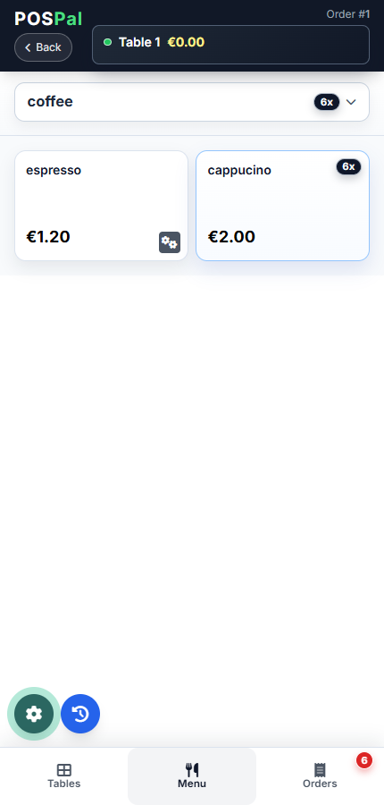
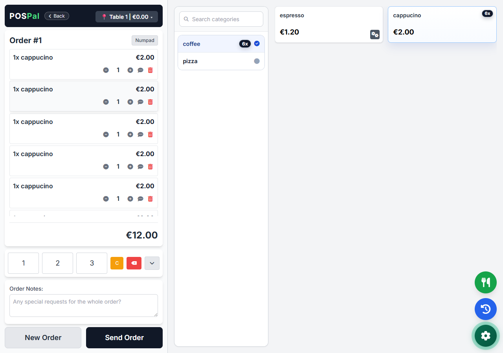

Παραγγελιοληψία για εστίαση · Εγκατάσταση σε Windows
Από το τραπέζι μέχρι την κουζίνα. Χωρίς διακοπές.
Το POSPal κρατά την παραγγελία ζωντανή: τραπέζια, απλή λειτουργία, ροή κουζίνας και QR μενού σε ένα πρόγραμμα που κατεβάζεις και στήνεις με οδηγούς.
30 ημέρες δωρεάν · χωρίς κάρτα · χωρίς προσωπικά στοιχεία
Την κρατάς όσο η συνδρομή παραμένει ενεργή.
Η εικόνα δείχνει παραγγελία που καταχωρείται σε συσκευή σερβιτόρου, αποθηκεύεται προσωρινά όταν βγει από το Wi-Fi, συγχρονίζεται όταν επιστρέψει στο τοπικό δίκτυο και περνά στο POSPal και στην κουζίνα.


ΚινητόΠαραγγελία στο χέριΚινητό ή tablet στο τοπικό δίκτυο.
Εκτός εμβέλειαςΔεν χάνεται η καταχώρησηΗ συσκευή κρατά την παραγγελία προσωρινά.
WindowsΈλεγχος στον υπολογιστήΗ κύρια εφαρμογή τρέχει στο κατάστημα.
ΈξοδοςΚουζίνα και QR μαζίΡοή κουζίνας και QR μενού στην ίδια συνδρομή.
Πριν το κατεβάσεις
Ξέρεις τι χρειάζεται. Ξέρεις και τι δεν είναι.
Υπολογιστής WindowsΕκεί εγκαθίσταται το POSPal.
Κινητό ή tabletΣυνδέεται στο ίδιο τοπικό δίκτυο.
Εκτυπωτής προαιρετικάΜόνο αν θέλεις έντυπα δελτία κουζίνας.
Δίπλα στο φορολογικό σύστημαΔεν είναι ταμειακή ή φορολογικό POS.

QR μενού χωρίς έξτρα module
Το QR μενού δεν είναι πρόσθετο. Είναι μέρος της ίδιας ροής.
Περνάς προϊόντα στο POSPal και έχεις μενού πελάτη με προσαρμόσιμη εμφάνιση. Δεν το πουλάμε ως ξεχωριστό module και δεν προσθέτουμε δεύτερη χρέωση.
Προϊόντα από ένα σημείοΗ ίδια λογική καταλόγου τροφοδοτεί παραγγελία και μενού πελάτη.
Εμφάνιση που αλλάζειΤο μενού μπορεί να προσαρμοστεί στην εικόνα του καταστήματος.
Χωρίς έξτρα κόστος moduleΠεριλαμβάνεται στη συνδρομή POSPal.
Οδηγοί που κάνουν δουλειά
Η εγκατάσταση πρέπει να μοιάζει εφικτή πριν πατήσεις download.
Ο επισκέπτης που θέλει direct λύση φοβάται το στήσιμο. Εδώ του δείχνουμε τη διαδρομή: τι χρειάζεται, τι ανοίγει, τι δοκιμάζει, και πού πάει αν κολλήσει.
Άνοιξε τους οδηγούς- ΕξοπλισμόςWindows, δίκτυο, προαιρετικός εκτυπωτής.Ξεκινάς γνωρίζοντας αν ταιριάζει στο κατάστημά σου.
- ΕγκατάστασηΚατεβάζεις, ανοίγεις, ελέγχεις σύνδεση.Η πρώτη επαφή γίνεται χωρίς κάρτα ή προσωπικά στοιχεία.
- Μενού και QRΠερνάς προϊόντα και βλέπεις το μενού πελάτη.Το QR δεν μπαίνει ως δεύτερο έργο.
- Πρώτη βάρδιαΔοκιμάζεις παραγγελία από άκρη σε άκρη.Κινητό, Windows και κουζίνα ελέγχονται μαζί.
Χρειάζεσαι βοήθεια; Οι οδηγοί είναι η κύρια διαδρομή. Υπάρχει και πρακτική βοήθεια μέσω email, χωρίς υπόσχεση επιτόπιας εγκατάστασης ή SLA.
Μήνα με τον μήνα
Δεν αγοράζεις πακέτο. Δοκιμάζεις ροή.
Η παλιά αγορά σε σπρώχνει σε μεγάλο εφάπαξ κόστος, ετήσια συντήρηση και πρόσθετα modules. Το POSPal ξεκινά ως κυλιόμενη συνδρομή, με ξεκάθαρο όριο: το στήνεις εσύ με οδηγούς.
Συνηθισμένο μοντέλομεγάλο αρχικό κόστος + ετήσια συντήρηση + modules
POSPal€18,90/μήνα για πρώτους χρήστες, όσο η συνδρομή μένει ενεργή
- Τραπέζια και απλή λειτουργία
- Μέσα
- Ροή κουζίνας
- Μέσα
- QR μενού
- Μέσα
- Ακύρωση
- Σταματά την επόμενη ανανέωση
Το POSPal δεν είναι ταμειακή ή φορολογικό POS.
Ξεκίνα 30 ημέρες δωρεάνΠρακτικές απαντήσεις
Πριν το βάλεις σε βάρδια.
Είναι το POSPal ταμειακή ή φορολογικό POS;
Όχι. Το POSPal οργανώνει παραγγελιοληψία και ροή κουζίνας. Λειτουργεί δίπλα στο υπάρχον φορολογικό σύστημα.
Τι σημαίνει ότι δουλεύει εκτός Wi‑Fi;
Αφορά τη συσκευή του σερβιτόρου. Αν βγει προσωρινά από την εμβέλεια του τοπικού δικτύου, μπορεί να κρατήσει την παραγγελία στη συσκευή και να τη συγχρονίσει όταν επιστρέψει. Δεν σημαίνει ότι ο κύριος υπολογιστής λειτουργεί για πάντα χωρίς internet.
Χρειάζομαι τεχνικό για εγκατάσταση;
Το μοντέλο είναι αυτοεγκατάσταση με οδηγούς. Δεν χρεώνουμε setup ή συντήρηση και δεν πουλάμε επιτόπια εγκατάσταση ως υπηρεσία.
Τι γίνεται όταν ακυρώσω;
Σταματά η επόμενη ανανέωση. Η πρόσβαση συνεχίζεται μέχρι το τέλος της ήδη πληρωμένης περιόδου.
Κατέβασε το POSPal για Windows.
30 ημέρες δωρεάν, χωρίς κάρτα και χωρίς προσωπικά στοιχεία.
Κατέβασε για Windows